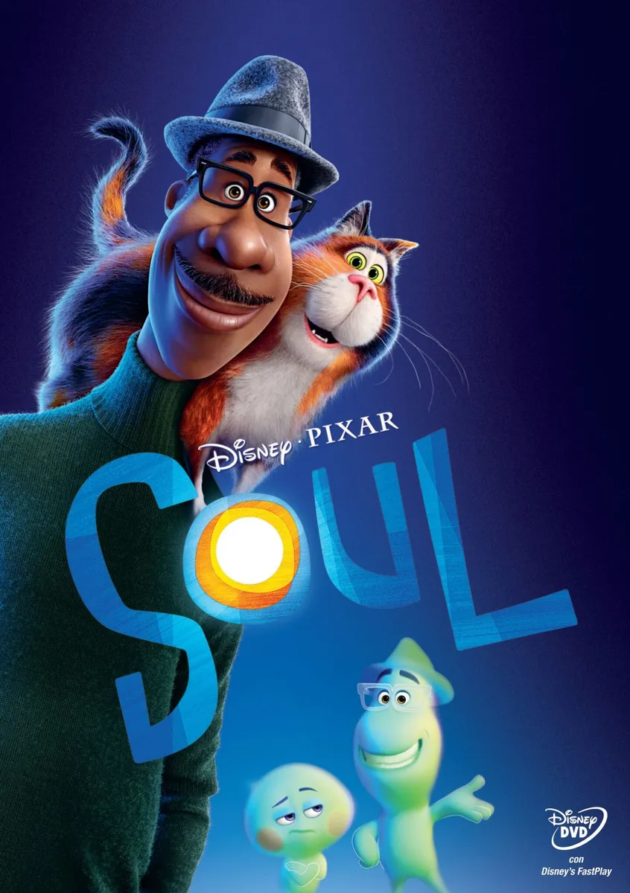

-
Melhores Filmes da Disney

- Soul
Descrição
Em Soul, duas perguntas se destacam: Você já se perguntou de onde vêm sua paixão, seus sonhos e seus interesses? O que é que faz de você... Você?
A Pixar Animation Studios nos leva a uma jornada pelas ruas da cidade de Nova York e aos reinos cósmicos para descobrir respostas às perguntas mais importantes da vida.
Dirigido por Pete Docter e produzido por Dana Murray.
Clique aqui e veja outros melhores filmes da Disney
Filme Luca
Filme Toy Story